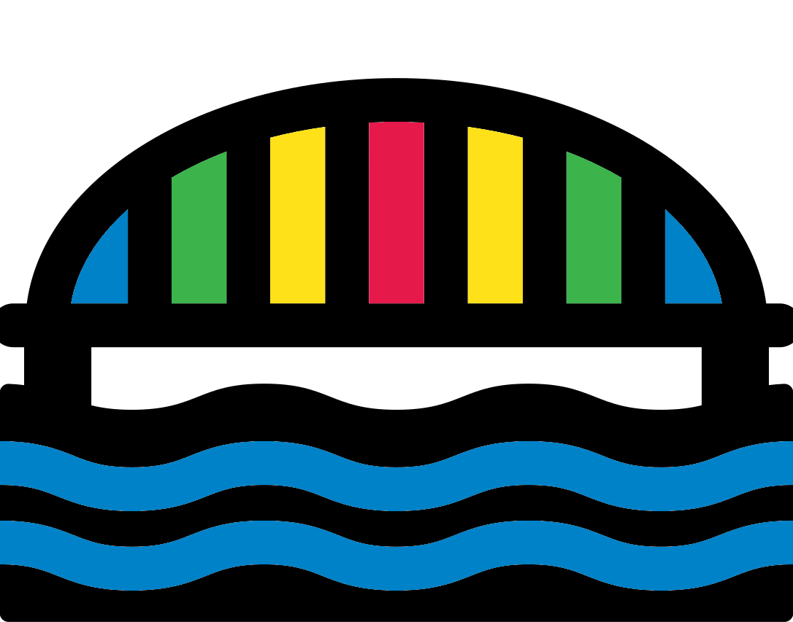

DEBT: Drug Exchange on a Bridge Tonight

Dilemma
The team are hired to facilitate a drug deal of Holy water. The deal takes place North of Paris on a bridge over The Oise. The bridge is near an abandoned industrial estate overgrown with weeds and trees. Only crickets and starlight should be overlooking the scene.
The team chooses one of the 2 options:
- Hired by Triton & Delta (Proteus) to sell the Holy water.
- Hired by TAG (Gaia) to purchase the Holy water.
Either way, the team will enter on the other side of the bridge to the group they will meet. In typical fashion, the exchange will occur on the middle of the bridge.
The exchange is 40 bottles of Holy water for £40,000.
Sellers
If the team agree to be the sellers for Triton & Delta they will be lent a Super Aquarama (8 HP, 1 ARMOR). A small dilapidated jetty near the bridge allows the team to get on land.
The buyers will be lead by a black haired beauty calling herself Vivi, a TAG LEADER. She is accompanied by 3 TAG ECO FIGHTERS. They arrive in a Volskwagon Iltis, a German military light utility vehicle (12HP, 1 ARMOR)
Vivi will try to secretly underpay the team only initially giving a duffel bag of £35,000 (35 wrapped notes of £1,000). The team may notice or not. If they confront the buyers about this they will feign innocence but relent and pay the extra if the team are persuasive enough.
Reward
If the team successfully escapes and bring the money they received they will be given the following reward.
- USAS-12 automatic shotgun (1D6+1 DAMAGE, FLASHY)
FLASHY weapon tag: If you describe a unique and bombastic attack with this weapon, you can roll +CREATIVE to hit.
If the team did particularly well they may get one or both of the below as well. Doing well includes getting all the money back home and having a valued customer, Vivi, not die.
- 1D6 Wonder pills (+1D6+1 HP)
- Documents (classified, answer 1D6 questions)
Purchasers
If the team agree to be the purchasers for TAG they will be lent a Volskwagon Iltis, a German military light utility vehicle (12HP, 1 ARMOR).
The sellers will be lead by Otto, a lanky well dressed TRITON & DELTA SELLER. He is escorted by 3 TRITON & DELTA ENFORCERS. They arrived via a Super Aquarama (8 HP, 1 ARMOR) that is tied to a nearby jetty.
Otto will try to strong arm the team for more money claiming the agreed amount was £50,000. The team will need to overcome this hurdle in some way.
Reward
If the team successfully escapes and bring the Holy water they received they will be given the following reward.
- Compound bow (1D6 DAMAGE, REMOTE)
REMOTE weapon tag: Projectiles (or the weapon itself) can be remotely steered through chutes and around walls.
If the team did particularly well they may get one or both of the below as well. Doing well includes exfiltrating with 40 bottles of Holy water and having the seller, Otto, not die.
- 1D6 Tactical clothing (1 ARMOR)
- Motorcycle (6 HP, 1 ARMOR)
Kraken interference
During the mission some Kraken forces will arrive attempting to steal the Holy water and money. Kraken always like to disrupt TAG.
If a smooth exchange happens then Kraken will appear after goods have been exchanged but before the parties leave. If the exchange is prolonged Kraken will come in the middle of the exchange. Use your best judgement as the referee.
On each side of the bridge 1 Subaru Leone car (8 HP, 1 ARMOR) will close off the escapes. Each car has 2 KRAKEN PRIVATE CONTRACTORS. Each car is accompanied by 2 other KRAKEN PRIVATE CONTRACTORS driving Honda CR250R dirt bikes (6 HP, 2 ARMOR). They will get out, use their doors as cover, and await further instructions from Dross.
Dross, a KRAKEN SLAGGER, leads the Kraken forces riding a custom Honda CR250R dirt bike (7 HP, 2 ARMOR). He will attempt to coerce the team to hand over the money and Holy water.
How this turns out is based heavily on the actions of the player team. Some possible scenarios include:
- A gun fight on the bridge until one side is dead
- An on-road vehicle chase
- The team escaping on the speedboat only to be chased by dirt bikes on the river bank.
- The team negotiating only handing over the money or Holy water based on their mission.
Add some reinforcement KRAKEN PRIVATE CONTRACTORS driving Honda CR250R dirt bikes (6 HP, 2 ARMOR) if you feel some more excitement could be had.
End
Once the team have safely exfiltrated by road or The Oise the machine is complete. The team will be rewarded based on the outcome.